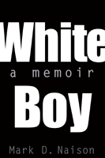

<body bgcolor="#FFFFFF" text="#000000" link="#0000FF" vlink="#CC0000" alink="#CC0000"><center><hr width="350" size="1" align="center" noshade>A life on the front lines of academic and social change<hr width="350" size="1" align="center" noshade><p><a href="https://cdcshoppingcart.uchicago.edu/Cart/ChicagoBook.aspx?ISBN=9781566399418&&PRESS=temple" target="_top">Buy this book!</a> | <a href="https://cdcshoppingcart.uchicago.edu/Cart/Cart.aspx?PRESS=temple" target="_top">View Cart</a> | <a href="https://cdcshoppingcart.uchicago.edu/Cart/Cart.aspx?PRESS=temple" target="_top">Check Out</a></p><p></p></center><!--none//--><h1>White Boy</h1>
<H2>A Memoir</H2>
<h3>Mark D. Naison</h3>
<P>cloth 1-56639-941-6 $84.50, Mar 02, <FONT COLOR=#990033>Available</FONT>
<br>paper 1-56639-942-4 $28.95, Mar 02, <FONT COLOR=#990033>Available</FONT>
<br>Electronic Book 1-59213-801-2 $28.95 <FONT COLOR=#990033>Available</FONT>
<BR> 240 pp
6x9
</P><h3 align="center"><P><font color="#996633">Mark Naison is the recipient of the Poe Award for Literary Excellence of the Bronx County History Society,
2004</font></P>
</H3>
<BLOCKQUOTE><I>"When W.E.B. Du Bois wisely cautioned in </I>The Souls of Black Folk<I> that 'he would not Africanize America, for America has too much to teach the world and Africa,' might he have had some future Mark Naison in mind? In any case, if a shade of doubt had ever existed about this white boy's qualifications to teach and write African American history, Naison's engrossing, tumultuous memoir ought assure the author a place of honor not only among his professional peers of color but in the front ranks of all those for whom differences based on ideas and ideals&#151not on color or gender or class&#151are the only ones that matter."</I>
<br>&#151<b>David Levering Lewis</b>, Martin Luther King, Jr., University Professor at Rutgers University and twice recipient of the Pulitzer Prize for Biography in 1994 and 2001<I></I></BLOCKQUOTE>
<p>How does a Jewish boy who spent the bulk of his childhood on the basketball courts of Brooklyn wind up teaching in one of the city's pioneering black studies departments? Naison's odyssey begins as Brooklyn public schools respond to a new wave of Black migrants and Caribbean immigrants, and established residents flee to virtually all-white parts of the city or suburbs. Already alienated by his parents' stance on race issues and their ambitions for him, he has started on a separate ideological path by the time he enters Columbia College. Once he embarks on a long-term interracial relationship, becomes a member of SDS, focuses his historical work on black activists, and organizes community groups in the Bronx, his immersion in the radical politics of the 1960s has emerged as the center of his life. Determined to keep his ties to the Black community, even when the New Left splits along racial lines, Naison joined the fledgling African American studies program at Fordham, remarkable then as now for its commitment to interracial education.
<p>This memoir offers more than a participant's account of the New Left's racial dynamics; it eloquently speaks to the ways in which political commitments emerge from and are infused with the personal choices we all make.
<BR>&nbsp;<h2>Excerpt</h2><P>Excerpt available at <a href="http://www.temple.edu/tempress">www.temple.edu/tempress</a></p>
<BR>&nbsp;<h2>Reviews</h2>
<p><I>"</I>White Boy<I> is a happy exception to the absence of autobiographical writings of historians of social movements. It is also an inspired intervention into the history of Black Studies. Its ability to sustain optimism regarding interracialism while acknowledging the costs of long histories and deep structures of division makes the book a great asset."</I>
<br>&#151<b>David Roediger</b>, Babcock Professor of History at the University of Illinois, and author of <I>Colored White: Transcending The Racial Past</I>
<p><I>"</I>White Boy<I> is one of the most fascinating memoirs I've read in a while. It does much more than provide us with an interesting coming-of-age tale of a smart Jewish kid who discovered and fell in love with black life and culture&#151a love, like all loves, full of discord and mad misunderstandings. Instead, Naison tries to be self-reflexive along the way, providing social historical contexts while attempting to reconstruct his own sense of naivete he experienced at the moment of certain cultural encounters. Chock full of stories, </I>White Boy<I> will be an important and much debated book."</I>
<br>&#151<b>Robin D. G.
Kelley</b>, author of <I>Yo' Mama's DisFunktional!: Fighting the Culture Wars in Urban America</I>
<p><i>"...forthright and thoughtful memoir.... An adroit writer with a winning voice, Naison avoids romanticizing his activist days; he is at times also critical of New Left tactics (particularly those that reinforced racial polarization among activists), and he interrogates his own interest in and identification with black culture."</i>
<br>&#151<b><i>Choice</i></b>
<p><i>"Naison [writes] with unsparing honesty and personal revelation.... Naison's memoir grows in importance. It has raised some crucial issues, many of which go to the heart of the continuing search for racial justice and interracial unity. It should be read widely and debated vigorously."</i>
<br>&#151<b><i>Science and Society</i></b>
<p><i>"In this forthright and thoughtful memoir, Naison, who became, in the early 1970s, one of the first professors (and the only white man) at Fordham's new Institute of Afro-American Studies, recalls a lifetime of fascination with black history and culture and of antidiscrimination activism. ...An adroit writer with a winning voice, Naison avoids romanticizing his activist days; ...he interrogates his own interest in and identification with black culture."</i>
<br>&#151<b><i>Publishers Weekly</i></b>
<p><i>"...engrossing.... more than just a political memoir.... </i>White Boy<i> is an extraordinary, valuable and often funny memoir in which Naison relates his personal odyssey against the social ferment of the 1960s and early 1970s."</i>
<br>&#151<b><i>The Nation</i></b>
<p><i>"In a world where academic language waters down essential issues of truth and commercially driven art warps beauty, Naison's attempt to keep it real should be applauded."</i>
<br>&#151<b><i>Socialism and Democracy Online</i></b>
<p><i>"In this engaging and tough-minded memoir, Fordham's first white professor of African and African-American studies skillfully blends vivid storytelling with keen sociological analysis to discuss his career as an educator-activist, and to question all facile assumptions about race and identity."</i>
<br>&#151<b><a href="http://www.fordham.edu/Campus_Resources/Public_Affairs/Fordham_Magazine/Book_Reviews/White_Boy_8691.html" target="new">FORDHAM online</a></b>
<p><i>"This memoir presents a fascinating look at the journey of activists energized by the struggle for racial and gender equality from the 1960s into the new century. Naison is a personable and worthy guide."</i>
<br>&#151<b><i><a href="http://www.forewordmagazine.net/reviews/printreviews.aspx?ISBN=1566399416" target="new">ForeWord</a></i></b>
<p><i>"There's no doubting that Naison has the credentials to write this type of memoir. He either joined or had close connections to some of the most significant African American and White organizations influencing those times..."</i>
<br>&#151<b><i><a href="http://www.findarticles.com/p/articles/mi_qa3812/is_200209/ai_n9116502" target="new">The New Crisis</a></i></b>
<BR>&nbsp;<h2>Contents</h2><P>
<p>Preface
<br>Acknowledgments
<br>1. Crown Heights in the 1950s
<br>2. Race Conscious
<br>3. Looking Down on Harlem
<br>4. Meeting Ruthie
<br>5. Contested Territory
<br>6. Ball of Confusion
<br>7. Nowhere to Run, Nowhere to Hide
<br>8. Bringing the War Home
<br>9. A White Man in Black Studies
<br>10. Riders on the Storm
<br>11. Close to the Edge
</P><BR>&nbsp;<H2>About the Author(s)</H2>
<table><tr><td valign="top"><img src="/tempress/authors/1532_au.gif" height="90" width="75"></td><td width="100%" valign="middle"><p><b>Mark D. Naison</b> is Professor of African American Studies and History as well as Director of Urban Studies at Fordham University. He is the author of <I>Communists in Harlem During the Depression</I>.</P></td></tr></table>
<BR><H2>Subject Categories</H2>
<p><A HREF="/tempress/biography.html" TARGET="_top">Biography/Memoir/Autobiography</a>
<BR><A HREF="/tempress/jewish.html" TARGET="_top">Jewish Studies</a>
<BR><A HREF="/tempress/race.html" TARGET="_top">Race and Ethnicity</a>
</p>
<p align="center"><a href="https://cdcshoppingcart.uchicago.edu/Cart/ChicagoBook.aspx?ISBN=9781566399418&&PRESS=temple" target="_top">Buy this book!</a> | <a href="https://cdcshoppingcart.uchicago.edu/Cart/Cart.aspx?PRESS=temple" target="_top">View Cart</a> | <a href="https://cdcshoppingcart.uchicago.edu/Cart/Cart.aspx?PRESS=temple" target="_top">Check Out</a></p><p><font face="Arial" size="1"><a href="copyright.html" onMouseOver="window.status='Web Copyright Policy';return true;" onMouseOut="window.status=''" title="Web Copyright Policy">&copy;</a> 2015 <a href="http://www.temple.edu" target="new" onMouseOver="window.status='Link to Temple University home page';return true;" onMouseOut="window.status=''" title="Link to Temple University home page">Temple University</a>. All Rights Reserved. http://www.temple.edu/tempress/titles/1532_reg.html</font></p>